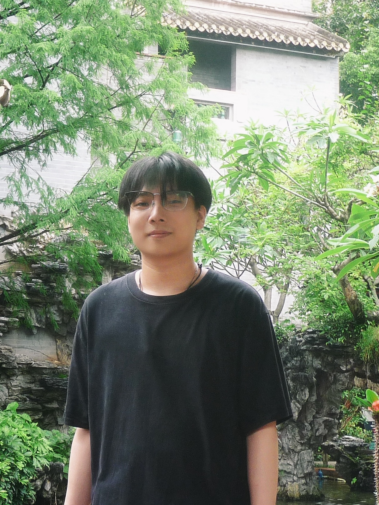
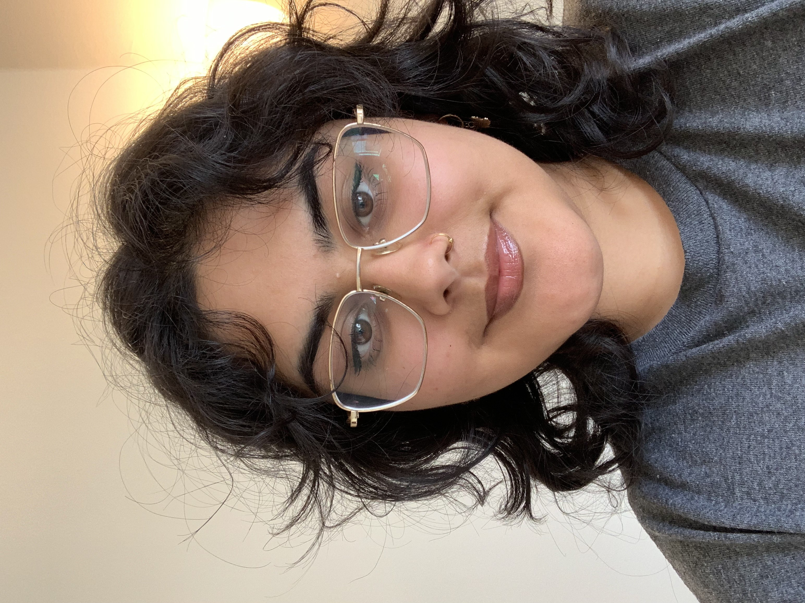
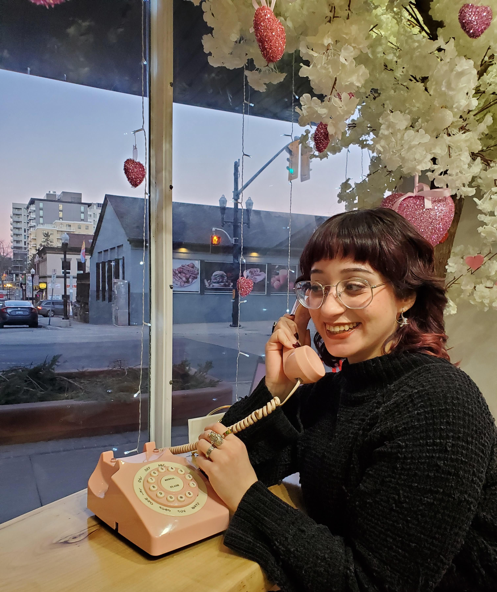
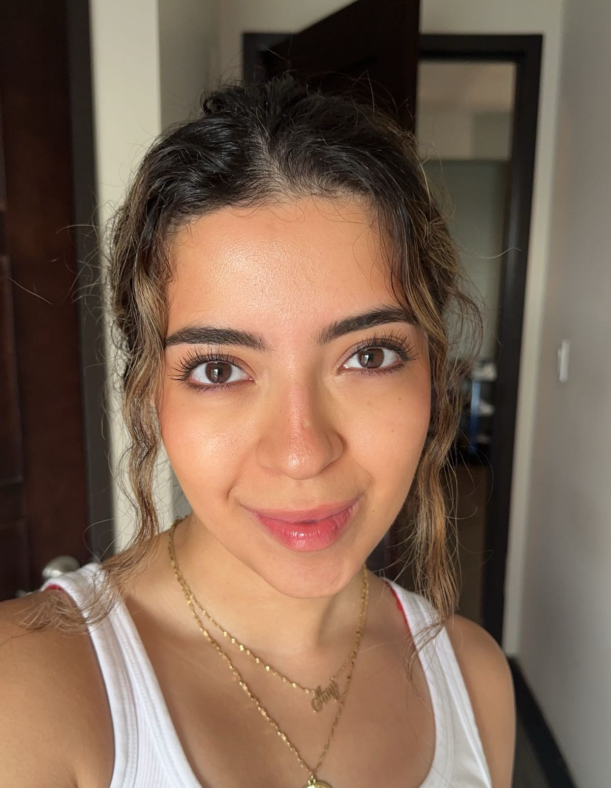

DR. CLARA COLOMBATTO, Principal Investigator
Dr. Colombatto is an Assistant Professor at the University of Waterloo, in the Department of Psychology, and an Honorary Lecturer at University College London. Prior to joining UW, Dr. Colombatto was a Research fellow at UCL. She earned a PhD in Psychology at Yale University, and a BS in Neuroscience and Philosophy from Duke University. Dr. Colombatto's research uses methods from vision science, cognitive psychology, and social psychology to investigate how we perceive other agents and their mental states.

YUANZE HUANG, MA Student
Yuanze (David) is a first-year master's student in cognitive psychology at the University of Waterloo. He is broadly interested in the intersection of visual perception and decision-making. His prior research focused on visual scene ensemble perception at the University of Toronto. He has a 3-year-old Ragdoll cat named QiuZi. In his spare time, he enjoys playing badminton and spending time with his cat.

SHAKTHI SENTHIL KUMAR, MA Student
Shakthi is a first year master's student working on the perception of non-biological agents, with a particular focus on how we collaborate with and take advice from artificial agents. Prior to joining UW, Shakthi completed her undergraduate degree at the University of Regina, where she researched interactions with techonology using eyetracking.

SIMRAN BAL, Honours Student
Simran is in her 4th year of Psychology BSc. at the University of Waterloo. She is interested in researching Social Perception. In the past, she has done a research apprenticeship in social intervention strategies and has worked as a research assistant conducting systematic reviews in healthcare topics. In her spare time, Simran enjoys rollerblading and learning electric guitar.
IRSA DUKA, Undergraduate Researcher
Irsa is in her 4th year at the University of Waterloo, majoring in Psychology with a Research Intensive Specialization and minoring in French. She is interested in understanding human behavior and what makes each of us unique by focusing on different areas of psychology (clinical, cognitive, social, etc.). Prior to joining the lab, Irsa worked as a research assistant at the Vision and Attention Lab. Her current research is focusing on how humans make inferences about others' character when watching them make moral decisions based on the confidence they express when making such decisions. She is also currently working on her Honours Thesis, where she's exploring the changes in wisdom in university-level students before, during, and after the pandemic. In her free time, she enjoys reading, writing, doing Pilates, and going to the gym.

LAYLA HUSSAIN, Honours Student
Layla is in her 4th year of the Psychology program (BA) at the University of Waterloo. She is interested in language acquisition, acquired brain injury, and visual perception. Prior to joining the lab, Layla worked on various EEG studies in the Face Processing and Social Cognition Lab. Additionally, she worked on the Talk2Thrive project in the Children's Communication Lab. In her spare time, Layla enjoys caring for her many houseplants and watching horror movies.
AARIFAH PANCHBHAYA, Honours Student
Aarifah is an undergraduate student at the University of Waterloo, majoring in Honours Psychology with a research-intensive specialization. She is currently completing her honours thesis under the supervision of Dr. Clara Colombatto, exploring the perception of emotion on different faces. Aarifah loves learning new languages and enjoys K-dramas.
CAROLINE SIMPSON, Undergraduate Researcher
Caroline is in her 4th year of the Honours Psychology program (BA, RI Spec) at the University of Waterloo. She is primarily interested in how we acquire knowledge and understanding, trust, and consciousness. Prior to joining the lab, Caroline worked on a computational model of learning with synaptic pruning. Her current research is focusing on perceptions of and trust in generative artificial intelligence. Outside of the world of psychology Caroline works in the software development industry, plays bass in a band, makes art of various forms, and is obsessed with her two adorable cats.

AMY DELIA YOUNESI, Honours Student
Amy is in her 4th year of the Psychology program (BSc) at the University of Waterloo completing her undergraduate thesis. She is broadly interested in social psychology, neuroscience, and cognition, but is specifically interested in how others influence our perception of the world. Her current research focuses on how the direction of eye gaze and body positioning influences one's visual perception of distance, as well as social judgments.
Alumni
Daniela Pasqualini (Honours Student, 2024)
Collaborators
Jonathan Birch, London School of Economics [web] Francesca Capozzi, UQAM [web] Molly Crockett, Princeton University [web] Jim AC Everett, University of Kent [web] Steve Fleming, University College London [web] Nick Hawes & Ingmar Posner, University of Oxford [web] Michel Maréchal & Julien Senn, University of Zürich [web] Jelena Ristic, McGill University [web] Brian Scholl, Yale University [web] Walter Sinnott-Armstrong, Duke University [web] Lev Tankelevitch & Sean Rintel, Microsoft Research [web] Ben van Buren, New School for Social Research [web]